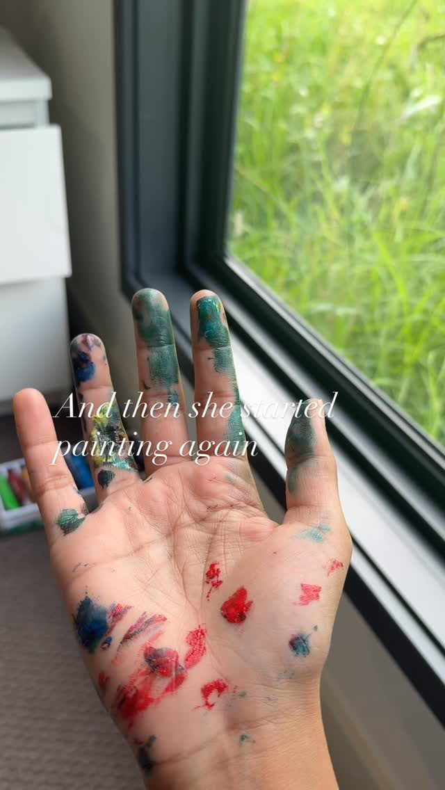
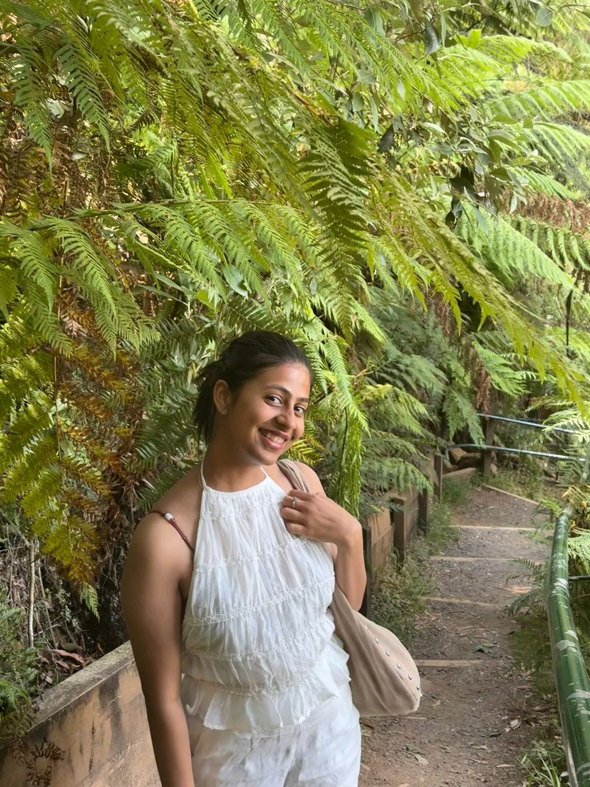
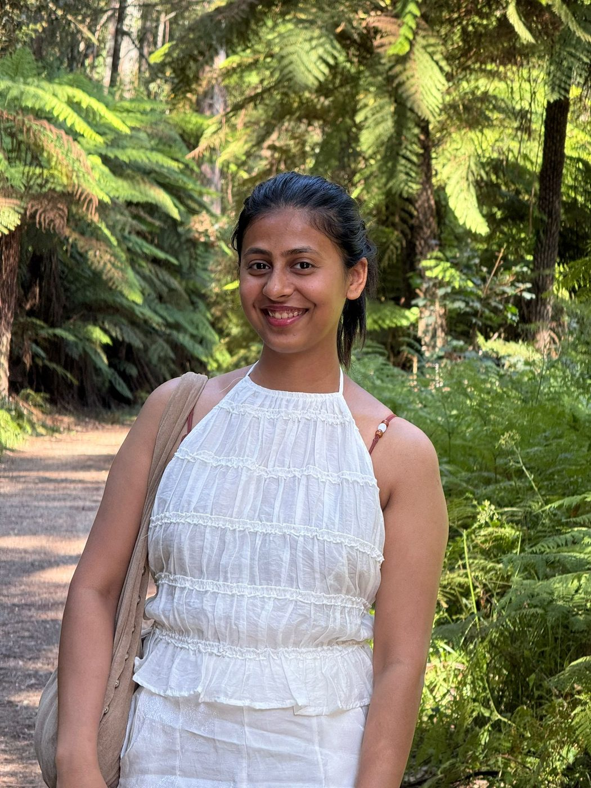
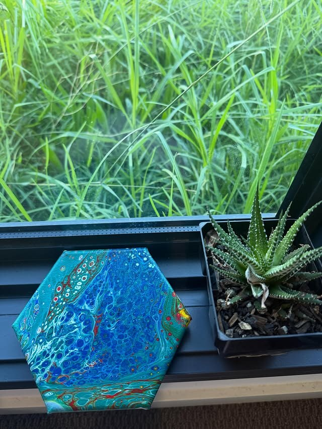

— the painter behind the paint
a self-taught artist based in australia, painting whatever feeling can't quite be said out loud. most pieces start as a colour stuck in her head — a teal she saw on the train, a red she felt on a tuesday.
she loves hexagons, native florals, small cats, the way light softens at five, and the kind of quiet that only a wet brush makes.
— thabu

and then she started painting again.— how it begins
most pieces start as a colour stuck in her head. by the time the canvas is done her hands are usually louder than the painting.
the studio is small. the light is honest. the cat is nearby.
— moments
small slices of the life behind the paintings.



— studio notes
curious what these colours feel like in your own hands? the play studio is open →
— say hi
no shop, no commissions — just a small inbox kept open for kind words, questions, and quiet conversations about colour.